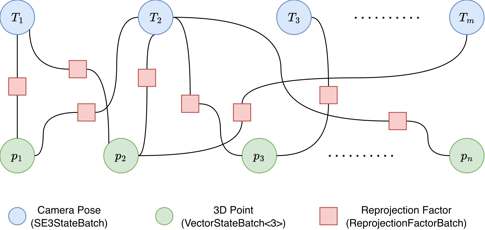
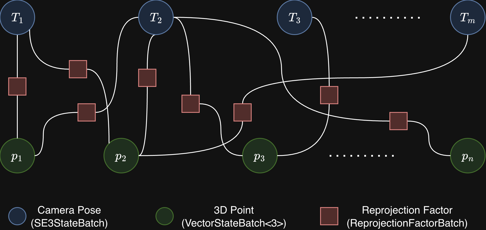
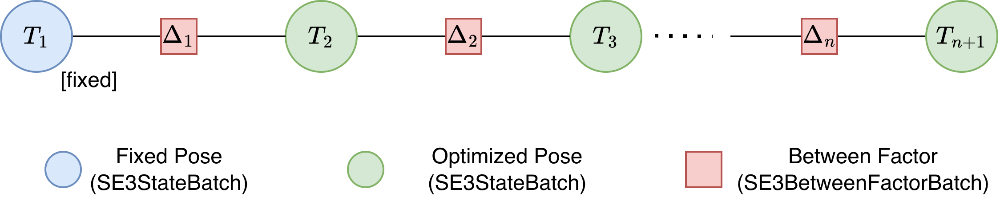
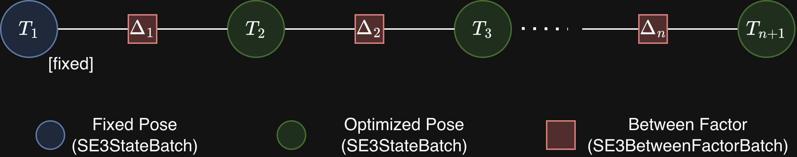
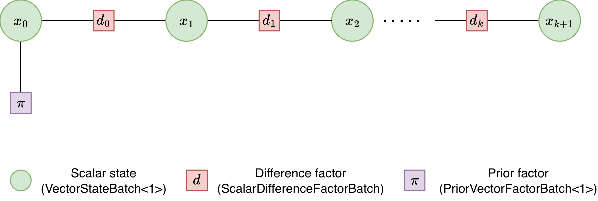
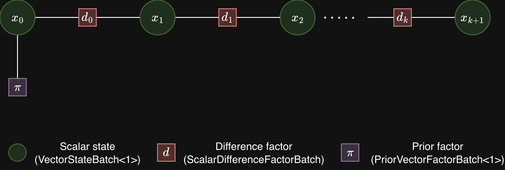

Tutorial#
Overview#
This tutorial walks through three complete cuNLS examples, each demonstrating a different optimization pattern. Every example follows the same high-level flow described in the Introduction:
Allocate state data on the GPU.
Wrap state memory in one or more
StateBatchobjects (see State API).Build one or more
FactorBatchobjects from observations (see Factor API).Add state batches and factor batches to a
Problem(see Minimizer API).Run a minimizer and inspect
MinimizerSummary.
The examples increase in complexity:
Sparse Bundle Adjustment — uses built-in
ReprojectionFactorBatchto jointly optimize camera poses and 3D landmarks from multi-view observations.Pose Graph Optimization — uses
SE3BetweenFactorBatchto recover a chain of SE(3) poses from consecutive relative-transform measurements.Custom Factor — shows how to implement a user-defined CUDA factor kernel by subclassing
SizedFactorBatch.
Full source code for all examples lives in the examples/ directory and is
built by the shared examples/CMakeLists.txt.
Common build commands#
Build all examples locally:
cmake -S examples -B build/examples/all \
-DCMAKE_BUILD_TYPE=Release \
-DCUNLS_INSTALL_DIR=/path/to/cunls_install
cmake --build build/examples/all -j
Build all examples in Docker and export binaries:
./examples/build_in_docker.sh Release ./artifacts/examples
Sparse Bundle Adjustment#
Source: examples/sparse_bundle_adjustment/main.cpp
Problem statement#
Bundle adjustment is the problem of jointly refining 3D structure and camera parameters to minimize reprojection error — the difference between where a 3D point actually projects into an image and where it was observed.
Given \(M\) cameras with poses \(T_1, \ldots, T_M \in \mathrm{SE}(3)\) and \(N\) 3D landmarks \(\mathbf{p}_1, \ldots, \mathbf{p}_N \in \mathbb{R}^3\), we form one residual per observation. The projection model transforms a world point \(\mathbf{p}\) into camera \(i\)’s frame and divides by depth to obtain normalized image coordinates:
The reprojection residual for observation \(k\), which pairs camera \(i\) with point \(j\), is:
where \(\mathbf{z}_k\) is the measured 2D observation and \(\pi\) is the normalized projection function above.
The full bundle adjustment objective minimizes the sum of squared reprojection errors across all \(K\) observations:
Because applying a rigid transform to every pose and point leaves all reprojection residuals unchanged, the system has a 6-DOF gauge freedom. Fixing one camera pose as a gauge anchor removes this freedom. In this example, the first pose \(T_0\) is held constant while the remaining poses \(T_1, \ldots, T_{M-1}\) and all 3D points are jointly optimized — the classic full bundle adjustment problem.
BA factor graph#
The problem has a bipartite factor graph: camera-pose variable nodes on one side, 3D-point variable nodes on the other, and reprojection factor nodes connecting them.


Factor graph for sparse bundle adjustment. The blue circle is the fixed
anchor pose
\(T_0\), green circles are optimized camera poses
(SE3StateBatch) and 3D point variables
(VectorStateBatch<3>), and orange squares are reprojection factors
(ReprojectionFactorBatch). Each factor connects one camera and one
point.
BA API used#
Class |
Role |
|---|---|
|
Stores camera poses on the SE(3) manifold. The first pose is marked
constant via |
|
Stores 3D landmark coordinates in \(\mathbb{R}^3\). All points are optimization variables. |
|
Computes normalized reprojection residuals and Jacobians for each (pose, point) pair. |
|
Assembles the factor graph: connects factors to states via device pointers. |
|
Iteratively solves the nonlinear least-squares problem with adaptive damping. |
BA code walkthrough#
Step 1 — Generate synthetic data. We create random camera poses via the SE(3) exponential map. Random 3D points are sampled and filtered so that every point has positive depth in all cameras. Each ground-truth point is perturbed to create a noisy initial estimate. Poses \(T_1, \ldots, T_{M-1}\) are also perturbed with small SE(3) transforms while \(T_0\) stays at ground truth.
const size_t num_poses = 6;
const size_t num_points = 800;
const size_t num_observations = num_poses * num_points;
// Generate ground-truth SE(3) camera poses from random twists.
std::vector<SE3Transform> gt_poses;
GenerateRandomPoses(num_poses, gt_poses);
// Sample 3D points that are visible from every camera (positive depth).
std::vector<Vector<3>> gt_points(num_points);
std::vector<Vector<3>> initial_points(num_points);
for (size_t i = 0; i < num_points; ++i) {
// ... sample until depth > kMinDepth in all cameras ...
initial_points[i] = gt_points[i];
initial_points[i][0] += noise_dist(rng);
initial_points[i][1] += noise_dist(rng);
initial_points[i][2] += noise_dist(rng);
}
// Perturb poses T_1...T_{M-1}; T_0 stays at ground truth.
const size_t num_perturbed = num_poses - 1;
std::vector<SE3Transform> perturbations;
examples::GenerateRandomSE3(num_perturbed, rng, perturbations, 0.02f, 0.1f);
std::vector<SE3Transform> initial_poses(num_poses);
initial_poses[0] = gt_poses[0];
for (size_t i = 0; i < num_perturbed; ++i) {
initial_poses[i + 1] =
examples::ComposeSE3(perturbations[i], gt_poses[i + 1]);
}
Step 2 — Create 2D observations.
Each camera observes every 3D point. Observations are in normalized image
coordinates (no intrinsics). This is the format
ReprojectionFactorBatch expects (see Factor API).
// Project ground-truth points through each camera to get observations.
// Normalized coordinates: p_cam = T * p_world, obs = (x/z, y/z).
std::vector<Vector<2>> observations(num_observations);
for (size_t pose_idx = 0; pose_idx < num_poses; ++pose_idx) {
for (size_t point_idx = 0; point_idx < num_points; ++point_idx) {
const size_t obs_idx = pose_idx * num_points + point_idx;
observations[obs_idx] =
examples::ProjectNormalized(gt_poses[pose_idx], gt_points[point_idx]);
}
}
Step 3 — Upload data to the GPU and build state batches.
The perturbed poses and noisy points are uploaded to the device. Camera
poses are wrapped in an SE3StateBatch with only \(T_0\) marked
constant (gauge anchor); the remaining poses are optimized jointly with
the 3D points in a VectorStateBatch<3>.
dvector<SE3Transform> poses_device(initial_poses);
dvector<Vector<3>> points_device(initial_points);
dvector<Vector<2>> observations_device(observations);
// Mark only the first camera pose as constant (gauge anchor).
std::vector<int> const_pose_ids = {0};
dvector<int> const_pose_ids_device(const_pose_ids);
cunls::cuBLASHandle cublas_handle;
cunls::SE3StateBatch pose_states(
cublas_handle, reinterpret_cast<const float*>(poses_device.data()),
num_poses, const_pose_ids_device.data(), 1);
cunls::VectorStateBatch<3> point_states(
reinterpret_cast<const float*>(points_device.data()), num_points);
Step 4 — Build the reprojection factor batch.
Each factor consumes two state blocks: one camera pose and one 3D point.
The z_threshold guards against numerical instability when a point
is nearly behind the camera.
cunls::ReprojectionFactorBatch reproj_factor(
cublas_handle, observations_device.data(), num_observations,
kZThreshold);
Step 5 — Create the state-pointer map and assemble the problem.
The state-pointer vector is a flattened list of device pointers, two per
factor: [pose_ptr, point_ptr]. This tells the solver which state
blocks each factor reads. The ordering must match
ReprojectionFactorBatch’s expected layout
(see Factor API).
// Flatten factor connectivity: [pose_0, point_0, pose_0, point_1, ...].
std::vector<float*> state_pointers;
state_pointers.reserve(2 * num_observations);
for (size_t pose_idx = 0; pose_idx < num_poses; ++pose_idx) {
for (size_t point_idx = 0; point_idx < num_points; ++point_idx) {
state_pointers.push_back(pose_states.StateBlockDevicePtr(pose_idx));
state_pointers.push_back(point_states.StateBlockDevicePtr(point_idx));
}
}
cunls::Problem problem;
problem.AddStateBatch(&pose_states);
problem.AddStateBatch(&point_states);
problem.AddFactorBatch(&reproj_factor, state_pointers);
problem.CheckConsistency();
Step 6 — Configure and run the Levenberg-Marquardt solver.
LevenbergMarquardtMinimizer (see Minimizer API) solves the damped
normal equations at each iteration and adapts the damping parameter
\(\lambda\) based on step quality.
cunls::MinimizerOptions options;
options.max_num_iterations = 80;
options.state_tolerance = 1e-8f;
options.cost_tolerance = 1e-8f;
cunls::LevenbergMarquardtMinimizerOptions lm_options;
lm_options.base_options = options;
lm_options.initial_lambda = 1e-3f;
cunls::LevenbergMarquardtMinimizer minimizer(lm_options);
cunls::CudaStream stream;
const auto summary = minimizer.Minimize(stream.GetStream(), problem);
cudaStreamSynchronize(stream.GetStream());
Step 7 — Read back results. After optimization, copy the updated poses and 3D points from the device and compare against ground truth. Both point MSE and pose MSE are reported.
std::vector<SE3Transform> optimized_poses(num_poses);
poses_device.CopyToHost(optimized_poses.data(), num_poses);
std::vector<Vector<3>> optimized_points(num_points);
points_device.CopyToHost(optimized_points.data(), num_points);
const float initial_point_mse = examples::ComputeVectorMSE(initial_points, gt_points);
const float final_point_mse = examples::ComputeVectorMSE(optimized_points, gt_points);
const float initial_pose_mse = examples::ComputePoseMSE(initial_poses, gt_poses);
const float final_pose_mse = examples::ComputePoseMSE(optimized_poses, gt_poses);
std::cout << "Initial cost: " << summary.initial_cost << "\n";
std::cout << "Final cost: " << summary.final_cost << "\n";
std::cout << "Iterations: " << summary.num_iterations << "\n";
std::cout << "Point MSE: " << initial_point_mse << " -> " << final_point_mse << "\n";
std::cout << "Pose MSE: " << initial_pose_mse << " -> " << final_pose_mse << "\n";
Pose Graph Optimization#
Source: examples/pose_graph_optimization/main.cpp
PGO problem statement#
Pose graph optimization (PGO) is a key building block in Simultaneous Localization and Mapping (SLAM). Given a set of poses and pairwise relative-transform measurements between them, the goal is to find the configuration of poses that best satisfies all measurements.
This example models a pose chain: \(N\) poses \(T_0, T_1, \ldots, T_{N-1} \in \mathrm{SE}(3)\) connected by \(N{-}1\) consecutive between constraints. Each constraint \(i\) connects pose \(T_i\) to pose \(T_{i+1}\) and carries a measured relative transform \(\Delta_i\). The relative-transform residual is defined on the SE(3) Lie algebra:
The residual \(r_i\) is the 6-DOF twist that measures how far the observed relative transform deviates from the measurement. When the constraint is exactly satisfied, the argument of \(\mathrm{Log}\) is the identity and \(r_i = 0\).
Because adding a rigid transform to every pose leaves all relative residuals unchanged, the system is rank-deficient without further constraints. Fixing the first pose \(T_0\) as a gauge anchor removes this freedom.
The optimization objective minimizes the sum of squared residuals over all non-fixed poses:
For a thorough introduction to graph-based SLAM see Grisetti et al., A Tutorial on Graph-Based SLAM, IEEE Intelligent Transportation Systems Magazine, 2010.
PGO factor graph#
The factor graph is a chain: each pose node connects to its neighbors through between factors, and the first pose \(T_0\) is held fixed.


Factor graph for pose graph optimization. The blue circle is the fixed
anchor pose
\(T_0\), green circles are optimized poses
(SE3StateBatch), and orange squares are between factors
(SE3BetweenFactorBatch). Each factor encodes a measured relative
transform
\(\Delta_i\).
PGO API used#
Class |
Role |
|---|---|
|
A single instance stores the full pose chain. The first pose is
marked constant via |
|
Computes the relative-transform residual \(\mathrm{Log}(\Delta \, T_i^{-1} \, T_{i+1})\) and its Jacobians w.r.t. both pose blocks. |
|
Assembles the factor graph. |
|
Solves the nonlinear system. |
PGO code walkthrough#
Step 1 — Generate synthetic pose chain and measurements. A random anchor pose and random relative transforms are generated. Ground-truth poses are built by chaining the transforms, then all poses except the anchor are perturbed to create the initial estimate. The perturbations are kept small so that the initial residuals stay within the well-conditioned region of the SE(3) log map.
const size_t num_poses = 201;
const size_t num_constraints = num_poses - 1;
std::mt19937 rng(9012);
// Random anchor and measured relative transforms.
std::vector<SE3Transform> anchor_pose, deltas;
examples::GenerateRandomSE3(1, rng, anchor_pose);
examples::GenerateRandomSE3(num_constraints, rng, deltas);
// Ground-truth chain: delta * T_i^{-1} * T_{i+1} = I
// => T_{i+1} = T_i * delta^{-1}
std::vector<SE3Transform> gt_poses(num_poses);
gt_poses[0] = anchor_pose[0];
for (size_t i = 0; i < num_constraints; ++i) {
gt_poses[i + 1] =
examples::ComposeSE3(gt_poses[i], examples::InverseSE3(deltas[i]));
}
// Perturb all poses except the fixed anchor.
// Small rotation (0.05 rad) and translation (0.3 m) perturbations.
std::vector<SE3Transform> disturbance;
examples::GenerateRandomSE3(num_constraints, rng, disturbance, 0.05f, 0.3f);
std::vector<SE3Transform> initial_poses(num_poses);
initial_poses[0] = gt_poses[0];
for (size_t i = 0; i < num_constraints; ++i) {
initial_poses[i + 1] =
examples::ComposeSE3(disturbance[i], gt_poses[i + 1]);
}
Step 2 — Upload data and build the state batch.
A single SE3StateBatch holds the entire pose chain. Only
\(T_0\) is marked constant; the remaining poses are optimizable.
dvector<SE3Transform> poses_device(initial_poses);
dvector<SE3Transform> deltas_device(deltas);
// Mark only T_0 as constant (gauge anchor).
std::vector<int> const_ids = {0};
dvector<int> const_ids_device(const_ids);
cunls::cuBLASHandle cublas_handle;
cunls::SE3StateBatch pose_states(
cublas_handle,
reinterpret_cast<const float*>(poses_device.data()),
num_poses,
const_ids_device.data(), 1);
Step 3 — Build the between-factor batch.
SE3BetweenFactorBatch takes the measured relative transforms and
internally computes the residual and 6 × 12 Jacobian for each factor.
cunls::SE3BetweenFactorBatch between_factor(
cublas_handle, deltas_device.data(), num_constraints);
Step 4 — Wire state pointers and assemble the problem.
Each between factor reads two state blocks: [T_i, T_{i+1}]. The
state-pointer vector is flattened in consecutive order.
// [T_0, T_1, T_1, T_2, ..., T_{N-2}, T_{N-1}]
std::vector<float*> state_pointers;
state_pointers.reserve(2 * num_constraints);
for (size_t i = 0; i < num_constraints; ++i) {
state_pointers.push_back(pose_states.StateBlockDevicePtr(i));
state_pointers.push_back(pose_states.StateBlockDevicePtr(i + 1));
}
cunls::Problem problem;
problem.AddStateBatch(&pose_states);
problem.AddFactorBatch(&between_factor, state_pointers);
problem.CheckConsistency();
Step 5 — Solve with Levenberg-Marquardt.
cunls::MinimizerOptions options;
options.max_num_iterations = 60;
options.state_tolerance = 1e-8f;
options.cost_tolerance = 1e-8f;
cunls::LevenbergMarquardtMinimizerOptions lm_options;
lm_options.base_options = options;
lm_options.initial_lambda = 1e-3f;
cunls::LevenbergMarquardtMinimizer minimizer(lm_options);
cunls::CudaStream stream;
const auto summary = minimizer.Minimize(stream.GetStream(), problem);
cudaStreamSynchronize(stream.GetStream());
Step 6 — Read back and validate. The optimized poses are downloaded and chain constraint satisfaction is evaluated by measuring \(\|\Delta_i \cdot T_i^{-1} \cdot T_{i+1} - I\|\) for every consecutive pair.
std::vector<SE3Transform> optimized_poses(num_poses);
poses_device.CopyToHost(optimized_poses.data(), num_poses);
std::cout << "Initial cost: " << summary.initial_cost << "\n";
std::cout << "Final cost: " << summary.final_cost << "\n";
std::cout << "Iterations: " << summary.num_iterations << "\n";
Custom Factor#
Source: examples/custom_factor/main.cu
Custom factor problem statement#
This example shows how to implement a user-defined factor by subclassing
SizedFactorBatch (see Factor API) and writing a CUDA kernel that
computes residuals and Jacobians.
We model a 1-D chain of \(N\) scalar states \(x_0, x_1, \ldots, x_{N-1}\) connected by \(N{-}1\) difference constraints. Each constraint carries a measurement \(m_i\) of the expected difference between consecutive states:
The Jacobians are trivially constant:
Because adding a constant to every state leaves all difference residuals unchanged, the system is rank-deficient without further constraints. A prior factor (anchor) on the first state removes this gauge freedom:
The full objective is:
This is a simple linear-in-state problem, but it demonstrates the full workflow for authoring custom factors.
Custom factor graph#
The factor graph is a chain: each variable node connects to its neighbors through difference factors, and a prior factor anchors \(x_0\).


Factor graph for the custom factor example. Green circles are scalar state
variables (VectorStateBatch<1>), orange squares are custom
difference factors (ScalarDifferenceFactorBatch), and the purple
square is the anchor prior (PriorVectorFactorBatch<1>) on
\(x_0\).
Custom factor API used#
Class |
Role |
|---|---|
|
Stores all \(N\) scalar states in \(\mathbb{R}^1\). |
|
Compile-time base for the custom factor (residual dim = 1, two state blocks of tangent dim 1 each). |
|
Built-in prior factor that pulls \(x_0\) toward the observed anchor value. |
|
Assembles the factor graph. |
|
Solves the nonlinear system. |
Custom factor code walkthrough#
Step 1 — Implement the CUDA kernel. The kernel is launched with one thread per factor. It reads two state block pointers, computes the scalar residual, and writes the constant Jacobian entries.
__global__ void ScalarDifferenceKernel(
const float* measurements,
float const* const* state_pointers,
float* residuals, float* jacobians,
size_t num_factors) {
const size_t idx = blockIdx.x * blockDim.x + threadIdx.x;
if (idx >= num_factors) return;
const float* left = state_pointers[idx * 2];
const float* right = state_pointers[idx * 2 + 1];
const float residual = (right[0] - left[0]) - measurements[idx];
if (residuals) residuals[idx] = residual;
if (jacobians) {
jacobians[idx * 2] = -1.0f; // dr/dleft
jacobians[idx * 2 + 1] = +1.0f; // dr/dright
}
}
Step 2 — Subclass SizedFactorBatch<1, 1, 1>.
The template arguments <1, 1, 1> encode: residual dim = 1, first state
block tangent dim = 1, second state block tangent dim = 1. The subclass
stores a device pointer to measurements and implements Evaluate by
launching the kernel above.
class ScalarDifferenceFactorBatch
: public cunls::SizedFactorBatch<1, 1, 1> {
public:
ScalarDifferenceFactorBatch(const float* measurements,
size_t num_factors)
: measurements_(measurements), num_factors_(num_factors) {}
bool Evaluate(float* residuals, float* jacobians,
float const* const* state_pointers,
cudaStream_t stream) const final {
constexpr int kBlockSize = 256;
const int grid = (num_factors_ + kBlockSize - 1) / kBlockSize;
ScalarDifferenceKernel<<<grid, kBlockSize, 0, stream>>>(
measurements_, state_pointers, residuals, jacobians,
num_factors_);
return true;
}
size_t NumFactors() const final { return num_factors_; }
private:
const float* measurements_;
size_t num_factors_;
};
Step 3 — Generate synthetic data. A monotonic ground-truth chain is created, then perturbed. Measurements are exact consecutive differences of the ground truth.
const size_t num_states = 256;
const size_t num_diff_factors = num_states - 1;
std::vector<Vector<1>> gt_states(num_states);
std::vector<Vector<1>> initial_states(num_states);
std::vector<float> measurements(num_diff_factors);
gt_states[0][0] = 0.5f;
for (size_t i = 1; i < num_states; ++i)
gt_states[i][0] = gt_states[i - 1][0] + step_dist(rng);
for (size_t i = 0; i < num_states; ++i)
initial_states[i][0] = gt_states[i][0] + noise_dist(rng);
for (size_t i = 0; i < num_diff_factors; ++i)
measurements[i] = gt_states[i + 1][0] - gt_states[i][0];
Step 4 — Build state batch and factor batches.
All states share a single VectorStateBatch<1>. Two factor batches are
added: the custom difference factors and a built-in prior anchor.
dvector<Vector<1>> states_device(initial_states);
dvector<float> measurements_device(measurements);
// Anchor observation: pin x_0 to its ground-truth value.
std::vector<Vector<1>> anchor_obs = { gt_states[0] };
dvector<Vector<1>> anchor_obs_device(anchor_obs);
const float* states_ptr =
reinterpret_cast<const float*>(states_device.data());
cunls::VectorStateBatch<1> state_batch(states_ptr, num_states);
ScalarDifferenceFactorBatch difference_factor(
measurements_device.data(), num_diff_factors);
cunls::PriorVectorFactorBatch<1> anchor_factor(
anchor_obs_device.data(), 1);
Step 5 — Wire state pointers and assemble the problem.
Difference factors read [x_i, x_{i+1}]; the prior reads only [x_0].
// Difference factor state pointers: [x_0, x_1, x_1, x_2, ...].
std::vector<float*> diff_state_pointers;
diff_state_pointers.reserve(2 * num_diff_factors);
for (size_t i = 0; i < num_diff_factors; ++i) {
diff_state_pointers.push_back(state_batch.StateBlockDevicePtr(i));
diff_state_pointers.push_back(state_batch.StateBlockDevicePtr(i + 1));
}
// Anchor factor state pointers: just x_0.
std::vector<float*> anchor_state_pointers = {
state_batch.StateBlockDevicePtr(0)
};
cunls::Problem problem;
problem.AddStateBatch(&state_batch);
problem.AddFactorBatch(&difference_factor, diff_state_pointers);
problem.AddFactorBatch(&anchor_factor, anchor_state_pointers);
problem.CheckConsistency();
Step 6 — Solve and inspect results.
cunls::MinimizerOptions options;
options.max_num_iterations = 50;
options.state_tolerance = 1e-8f;
options.cost_tolerance = 1e-8f;
cunls::LevenbergMarquardtMinimizerOptions lm_options;
lm_options.base_options = options;
lm_options.initial_lambda = 1e-3f;
cunls::LevenbergMarquardtMinimizer minimizer(lm_options);
cunls::CudaStream stream;
const auto summary = minimizer.Minimize(stream.GetStream(), problem);
cudaStreamSynchronize(stream.GetStream());
std::vector<Vector<1>> optimized_states(num_states);
states_device.CopyToHost(optimized_states.data(), num_states);
std::cout << "Initial cost: " << summary.initial_cost << "\n";
std::cout << "Final cost: " << summary.final_cost << "\n";
std::cout << "Iterations: " << summary.num_iterations << "\n";